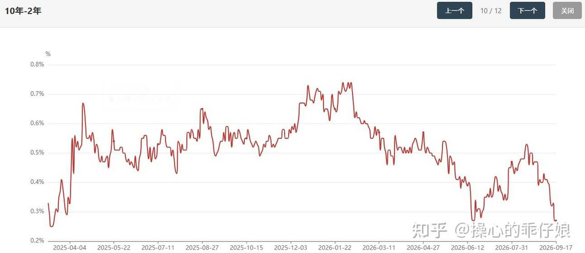
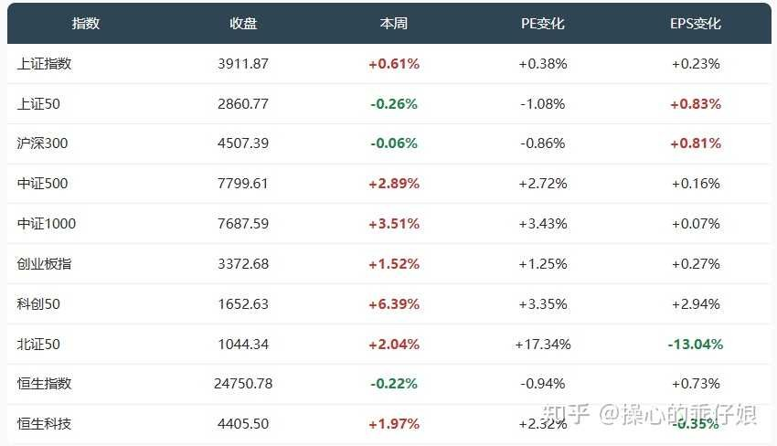
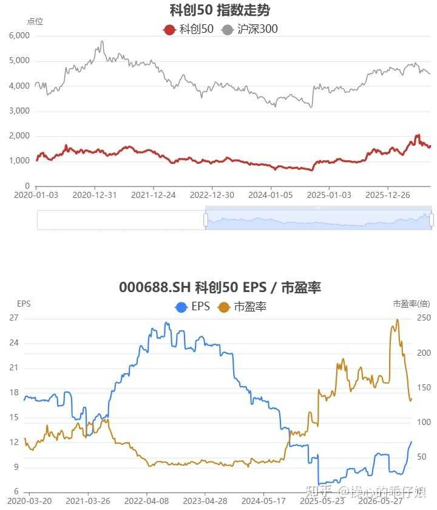
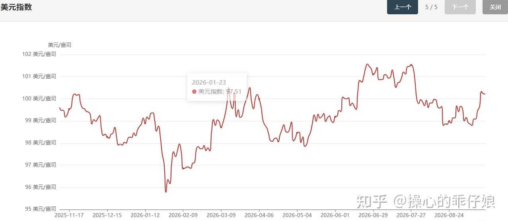
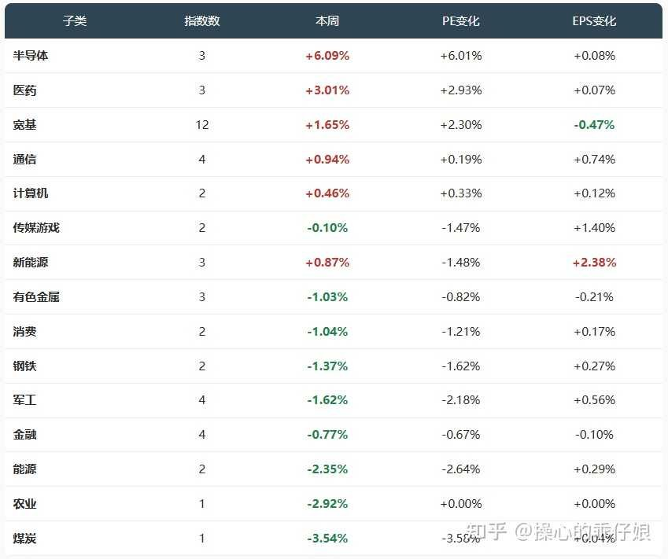
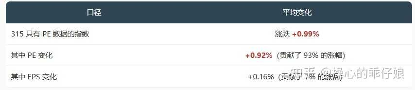

AI 文章核心概述（精简版）
本周市场呈现典型的“利空出尽式”估值修复行情。核心逻辑在于，美联储加息这一宏观利空在落地前已被市场通过连续两周的超跌（杀估值）充分消化。当靴子落地，市场不再恐慌，资金开始博弈反弹，导致PE（市盈率）扩张成为本周上涨的主要驱动力，而非EPS（每股收益）的实质性增长。这种行情本质上是情绪回暖带来的估值回归，而非基本面驱动的牛市起点。
这周 335 只指数里，173 只上涨，157 只下跌，中位数 +0.17%，整体小幅收涨。看起来很温和，但把涨跌拆开看就很有意思：平均涨幅 +0.99%，其中 PE 贡献了 +0.92 个百分点，EPS 只贡献了 +0.16 个百分点。
导火索很明确：美联储时隔三年再次加息（9月17日），这是"利空出尽是利好注【本质逻辑】市场价格反映的是预期而非现状。当市场已经为最坏的情况定价（股价已跌），一旦坏消息正式公布，反而消除了不确定性，资金会因为“利空不再恶化”而进场抄底。【新手提示】不要看到利空消息就盲目割肉，要观察前期股价是否已大幅下跌，若已充分下跌，利空落地往往是反转点。"的典型剧本——市场在加息前已经充分定价了，结果落地后反而松了一口气。

图表视觉解读
美债期限利差收窄（熊平），反映了市场对短期资金成本上升的担忧，这是压制大盘股表现的宏观背景。
美债期限利差这个月大幅收窄，呈现熊平注【本质逻辑】指收益率曲线变平，且通常伴随短端利率上升快于长端。这反映了市场对短期流动性收紧的担忧，是宏观环境转弱的信号。【新手提示】关注债市利差变化，这是股市宏观流动性的先行指标，利差收窄通常对高估值板块构成压力。
先看几个主要宽基的表现：

有个地方值得注意：大盘股几乎没动——上证50 -0.26%、沪深300 -0.06%，而中证500 和中证1000 分别涨了 +2.89% 和 +3.51%。上周的情况刚好相反：中证500 从 -3.07% 收窄到 -0.94%，大盘也在跌。轮动很明显。
科创50 是全场最亮的崽，本周 +6.39%，其中 PE +3.35%、EPS +2.94%，是少数几个盈利和估值都在涨的板块。原因不复杂：美联储加息落地后，成长股估值压制因素缓解，而半导体产业链（科创50 权重占比极高）正好赶上了 GPU/存储芯片涨价的催化。

图表视觉解读
科创50的PE与EPS曲线对比显示，前期估值被大幅压制，本周的上涨是估值修复与半导体基本面催化（涨价）共振的结果，属于典型的超跌反弹。
一、美联储加息：利空出尽的经典剧本
美联储时隔三年再次加息，市场反应出乎意料地平静——甚至是积极的。
这说明两件事：第一，加息本身已被充分预期，真正让市场不安的是"加息之后还会有多少次"；第二，对 A 股来说，美联储加息的直接冲击有限，更重要的是它对人民币汇率和北向资金的影响，而这两天北向资金流向还比较稳定。
不过加息终归是收紧流动性的信号，对高估值成长股是压力。但本周科创50 反而涨了 6.39%——这不是矛盾吗？答案是：市场已经"提前"杀了一轮估值。上两周科创50 分别跌了 -5.10% 和 -1.52%，高位回撤幅度不小。现在利空落地，前期超跌的反弹弹性最大。

二、全景：半导体领跑，周期板块承压
把 335 只指数按子类分组，3 只以上的排在下面：

几个要点：
半导体（+6.09%）一骑绝尘，而且是"PE 和 EPS 双涨"——PE +6.01%、EPS +0.08%，说明盈利和估值同时在扩张。上期复盘里说"半导体的 EPS 还在涨，杀估值注【本质逻辑】指在企业盈利不变甚至增长的情况下，市场因恐慌或流动性紧缩，大幅调低了愿意支付的价格倍数。这是市场情绪的极端体现。【新手提示】当看到优质成长股业绩没变但股价暴跌时，通常就是“杀估值”，这是长线资金分批布局的机会，而非恐慌离场的时刻。的行情不会持久"，这周就兑现了。
医药（+3.01%）也表现不错，但拆开看几乎全是 PE 贡献（+2.93%），EPS 只贡献了 +0.07%。跟半导体的"双引擎驱动"不同，医药更像是资金轮动的受益者——大盘横住后，前期没怎么涨的医药被资金看上了。
周期板块（煤炭 -3.54%、能源 -2.35%、钢铁 -1.37%）这周集体跌。原因不复杂：美联储加息通常利好美元、利空大宗商品，周期股首当其冲。不过煤炭的跌幅主要来自估值压缩（PE -3.58%），EPS 还在微幅上涨（+0.04%），说明盈利端没有问题。
新能源（+0.87%）是个有意思的案例：整体涨了，PE 跌了（-1.48%），EPS 涨了（+2.38%）——典型的"杀估值但赚盈利"。说明市场对新能源的盈利预期在上调，但对估值仍然谨慎。
三、估值拆解：九成涨幅来自 PE 扩张
本周整体估值拆解数据：

图表视觉解读
数据直观揭示了本周上涨的脆弱性：93%的涨幅由估值扩张贡献，意味着市场目前处于“情绪市”，而非“业绩市”，投资者需警惕情绪退潮后的回调风险。
翻译成大白话：这周大部分指数涨了一点点，但几乎都是市场愿意给更高倍数了，跟企业赚多少钱关系不大。
这种情况在什么背景下会发生？加息落地 + 利空出尽 + 前期超跌反弹——典型的估值修复行情。盈利增长是缓慢的，但估值可以一天涨好几个百分点。
四、本周核心矛盾：加息 vs 盈利
本周最值得关注的不是涨跌数字，而是两个力量的对抗：
一方面，美联储加息是收紧流动性的信号，理论上对高估值成长股不利。但从实际表现看，科创50 反而涨了 6.39%——这说明市场已经在两周前的连续下跌中消化了加息预期。
另一方面，盈利增长虽然只有 +0.16%，但方向是正的。315 只有 PE 数据的指数里，EPS 正增长的占比超过 60%。企业盈利还在扩张，只是扩张速度比估值慢。
这就引出一个关键问题：估值扩张能持续多久？
从历史经验看，加息周期初期的反弹通常能持续 2-3 周，之后市场会重新评估"加息终点在哪里"。如果后续还有加息信号，成长股的反弹可能会被打断；如果加息到此为止，估值修复行情可能还能延续。
五、下周观察什么
基于本周的格局，下周有几个值得关注的点：
1. 科技股的持续性。半导体本周涨 6.39%，但 EPS 只贡献了 +0.08%——也就是说涨的都是估值。如果下周没有新的基本面催化，这种纯估值驱动的反弹很难持续。需要关注 GPU/存储芯片的涨价逻辑能否继续兑现。
2. 周期板块的企稳。煤炭 -3.54%、能源 -2.35%、钢铁 -1.37%，跌幅不小但盈利还在涨（EPS 都是正的）。如果美联储加息的利空被消化，周期股的低估值可能重新吸引资金。
3. 北证50 的波动。北证50 本周 +2.04%，PE 暴涨 +17.34%——这几乎是纯情绪驱动。下周如果市场情绪降温，北证50 可能会率先回调。作为流动性最薄的板块，它的波动往往领先于整体市场。
4. 港股的独立性。恒生指数 -0.22%、恒生科技 +1.97%，走势跟 A 股不太同步。美联储加息对港股的汇率影响更大，下周需要关注人民币汇率的变化。
全文总结与新手避坑指南
本周行情是典型的“情绪修复”，核心逻辑是美联储加息预期落地后的估值回补。新手避坑指南：1. 警惕纯PE驱动的板块，这类板块（如北证50）一旦情绪退潮，回调速度极快；2. 区分“杀估值”与“杀业绩”，前者是机会，后者是深渊；3. 关注盈利增长（EPS）的持续性，只有EPS和PE双轮驱动的板块才具备中长期持有价值。不要在利空落地后的反弹高点盲目追涨，应寻找那些盈利预期上调但估值尚未完全修复的品种。